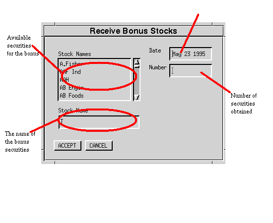

The transactions menu allows you to display all the transactions that apply to your portfolio and perform the different transactions on a specified security:
The transactions display window provides a full summary for all the transactions within the current portfolio. For each security within the portfolio, where there is at least one transaction, that security will be shown with all the applicable transaction types. By default all transactions are shown, but this behavior may be modified by using the 'Transaction Types' menu to specify the precise transactions of interest.
The order that the transactions are shown in is by default alphabetic, but this may be changed with the 'Ordering' menu so that the ordering can be on the basis of the date or the value of the transaction.
If you wish to see the transactions for a specific period in time, then use the 'Dates' option on the 'Project' menu to specify the date range.
Close the window with the 'Close' option on the 'Project' menu.

Used to add a purchase to the current portfolio. The total cost information may be used to include dealing charges.

Used to add a sale to the current portfolio.

This is typically used when a corporation provides some bonus securities without requiring payment or increasing the number of securities in circulation. Bonuses have been commonplace for rewarding long term owners of the earlier UK privatisation issues.

Used when the number of shares is changed, due to a split (i.e. a one for n issue).

Used when rights are received because of a current holding but without a purchase.

Used when previously obtained rights are exercised in order to obtain more of a particular security.

Used when rights are purchased.

Used when rights are sold.